This data was collected by Edward Faison and David Foster as part of the Harvard Forest Long-Term Ecological Research Project, and for a masters thesis written by Edward Faison titled Moose foraging in the temperate forests of Massachusetts: a natural re-wilding experiment. The sites of collection were 156 sites across 2 large, forested watersheds in Central Massachusetts. Data was collected in 2005, but published in 2023. This data was collected to study how moose interact with temperate forests, as they are becoming abundant in these areas again recently. The researchers wanted to study the impact of moose herbivory on vegetation, and what habitat features determine moose winter foraging activity.
The original data was compiled in two csv files. The first contained data related to the plots that were surveyed. This file had 156 rows and 21 variables (including the plot number). The second had data related to the trees in those plots. This dataset had 3,913 rows with 7 variables.
To prepare the data for analysis, I fixed data types in order to work with them best, and checked for any outliers, ultimately deciding to leave them in the data. I saved the updated dataset for Plot as Updated_Moose_Plot_Data.csv.
Additionally, I checked over and edited the levels of the species variable in the tree dataset for spelling errors in the names. I combined the binary columns browsed, stripped, and broken into one new binary interaction column that generalized whether the tree had been interacted with by a moose. This code was done in the file PrepLogisticRegDataset_Dec18.qmd, located in the drafts folder. I saved the new dataset as FinalUpdated_Moose_Tree_Data.csv.
Multiple Regression
In this document I will go through the workflow of conducting a mutliple regression statistical analysis on the data from the file Updated_Moose_Plot_Data.csv
Set up
rm(list =ls())library(tidyverse)
── Attaching core tidyverse packages ──────────────────────── tidyverse 2.0.0 ──
✔ dplyr 1.1.4 ✔ readr 2.1.5
✔ forcats 1.0.0 ✔ stringr 1.5.1
✔ ggplot2 3.5.1 ✔ tibble 3.2.1
✔ lubridate 1.9.3 ✔ tidyr 1.3.1
✔ purrr 1.0.2
── Conflicts ────────────────────────────────────────── tidyverse_conflicts() ──
✖ dplyr::filter() masks stats::filter()
✖ dplyr::lag() masks stats::lag()
ℹ Use the conflicted package (<http://conflicted.r-lib.org/>) to force all conflicts to become errors
library(here)
here() starts at /Users/ebar/Library/CloudStorage/OneDrive-St.LawrenceUniversity/Classes/Biostats/Biostats F24/Student Work/R Projects/CapDAP/Anderson-Capstone-Project
library(Hmisc) #for testing significance of correlations
Attaching package: 'Hmisc'
The following objects are masked from 'package:dplyr':
src, summarize
The following objects are masked from 'package:base':
format.pval, units
library(GGally) #for making pairwise plots of variables
Registered S3 method overwritten by 'GGally':
method from
+.gg ggplot2
library(corrplot) #for looking at correlation matrices
Takes it from 156 rows to 70 rows with 22 total variables.
Fix data types
Fix watershed to be a factor
Plot$watershed <-as.factor(Plot$watershed)
Hypotheses
I will use an exploratory approach to determine which predictor variable is the best predictor of moose browse index.
Null Hypothesis: None of the variables will be predictor of browse index.
Alternative Hypothesis: One of more of the variables will be predictors of browse_index. These variables may be distance to water (dist_h2o_m), elevation (elev_m), harvest intensity (harvest_intensity_m2.ha), wetland forest (wetland_forest), or distance to development (dist_dev_m).
Biological Justification: Moose eat aquatic plants and are good swimmers, often going in water to cool down (USDA Forest Service, n.d.). They might choose to be closer to water, or in a forest with wetlands. They are adapted to colder temperatures, so they might choose higher elevations where the temperature is naturally cooler (USDA Forest Service, n.d.). Moose are solitary animals, and it’s rare to see one (Massachusetts Division of Fisheries & Wildlife, n.d.). This might be because they choose habitat at farther distances from development. Additionally, moose make trade offs when choosing whether to inhabit old growth or new growth forests. Old growth provides shelter, but new growth provides food, which may be more important (USDA Forest Service, n.d.). Harvested forests have more new growth (Massachusetts Division of Fisheries & Wildlife, n.d.).
`stat_bin()` using `bins = 30`. Pick better value with `binwidth`.
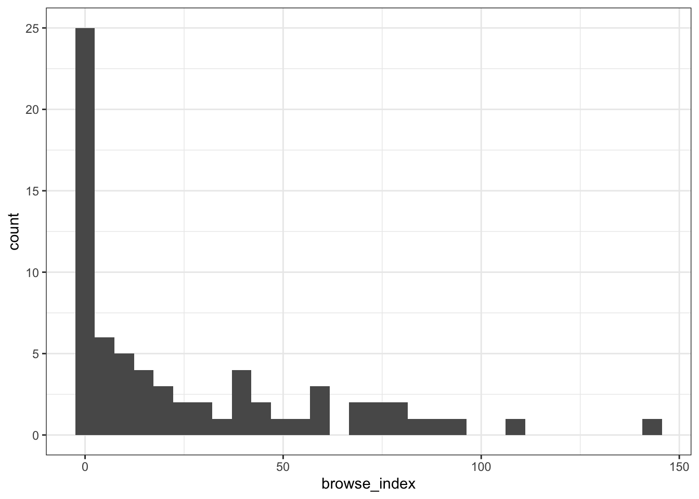
This histogram shows that this data set is very 0 heavy, with 25 out of the 70 rows having 0 for the browse_index.
range(Plot$browse_index, na.rm=T)
[1] 0.0000 143.1818
Browse_index ranges from 0 to 143.
Correlations
Test if any of the predictor variables are highly correlated, as we wouldn’t want to use both. Variables that have correlation coefficients > +/- 0.7 are considered too highly correlated.
First need to move watershed to the far left because it is categorical so I can get correlation info for the rest.
Went from 153 rows to 7 that are significantly highly correlated.
Harvest intensity and harvest are highly correlated so I’ll just use harvest intensity.
Swamp, wetland forest, tall shrubs, and spruce fir basal area were all highly correlated with each other, so I will just use tall shrubs because it has the most non-zero values.
Now drop the variables that are too highly correlated (harvest, swamp, wetland_forest, spruce_fir_ba). Also going to drop watershed because it’s all Quabbin.
Plot <- Plot[ -c(4,9,10,16,21)]
Now there are 70 observations and 14 predictor variables.
The highest correlated predictors will the most positive and the most negative correlations.
In this case, it’s harvest intensity (at 0.5370188) and elevation (at 0.4170336) on the positive side. On the negative side it’s oak basal area (at -0.1197530) and deer density (at -0.07061546).
Plots with individual predictors
I will plot the 4 predictors that have the highest correlation with the response variable, browse index.
This plot makes sense as moose make trade offs when choosing whether to be in old growth or new growth forests. Old growth forests are best for shelter, while new growth forests are best for food, with plenty of young growth (U.S. Forest Service).
This plot has a lot of 0 values for harvest intensity, however.
This plot shows the relationship between elevation and browse index. There seems like there could be a slightly sloped line applied, with a general trend of higher browse index and higher elevations. This would make sense as moose prefer cooler temperatures (National Wildlife Federation) that may be found at higher elevations.
This plot has much less 0 values for elevation.
ggplot(Plot, aes(x=oak_ba, y=browse_index))+geom_point()+xlab("Relative % of basal oak area in plot")+ylab("Browse index")+theme_bw()
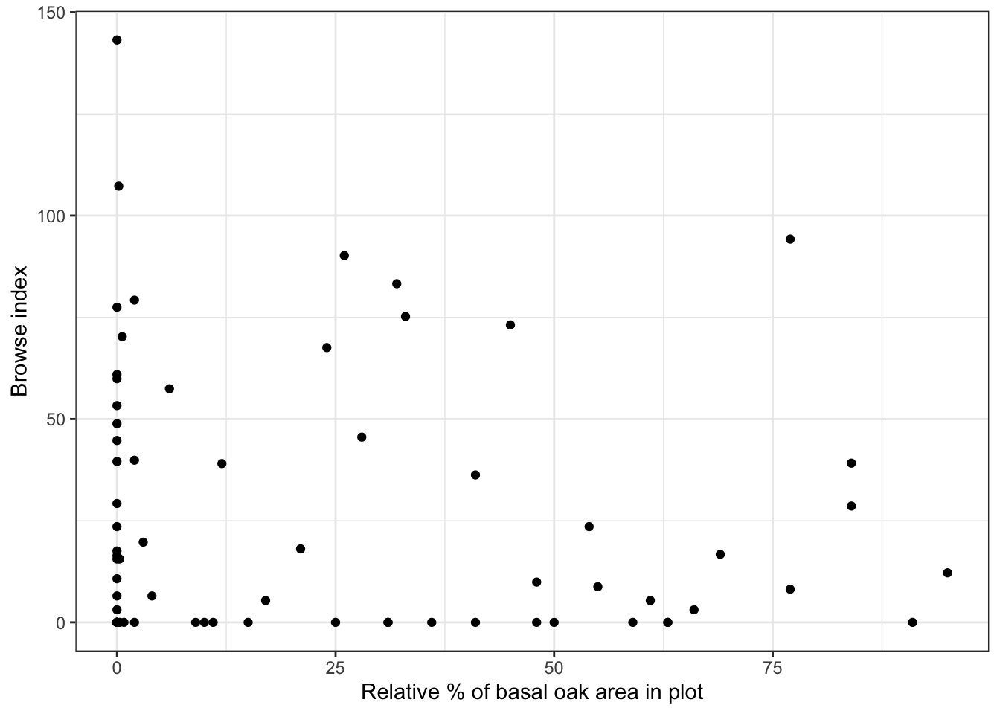
Oaks are listed as a tree species that moose prefer, so this makes sense as a potential good predictor (Massachusetts Division of Fisheries and Wildlife).
There are a good amount of zero values for relative % of basal oak area though.
Deer and moose do eat similar foods, so they could be competitors which might influence browse index. However, there doesn’t seem to be major trend here.
Create Model
First need to load some more packages to use, clear the environment, and load the cleaned for multiple regression data file.
rm(list =ls())library(tidyverse)library(performance) #for checking model performancelibrary(broom) #for tidying regression outputlibrary(leaps) #allows best subsets linear regressionlibrary(MASS) #for stepAIC function
Attaching package: 'MASS'
The following object is masked from 'package:dplyr':
select
library(data.table) #for confidence intervals
Attaching package: 'data.table'
The following objects are masked from 'package:lubridate':
hour, isoweek, mday, minute, month, quarter, second, wday, week,
yday, year
The following objects are masked from 'package:dplyr':
between, first, last
The following object is masked from 'package:purrr':
transpose
Next, build a best subsets regression to look at all the possible models and determine which is best.
Make a matrix with the response variable and predictor variables only. Means I need to drop the plot number variable, and the X variable.
preds <- Plot %>% dplyr::select(-(plot), -(X))
Build the models:
all_subsets.mods <-regsubsets( preds$browse_index ~ ., #specifies the model and . tells it to use all predictorsdata = preds,nbest =1#tells it to pick the one best model for each number of predictors )all_subsets.mods
Subset selection object
Call: regsubsets.formula(preds$browse_index ~ ., data = preds, nbest = 1)
14 Variables (and intercept)
Forced in Forced out
lat FALSE FALSE
elev_m FALSE FALSE
dist_h2o_m FALSE FALSE
hilltop FALSE FALSE
tall_shrubs FALSE FALSE
dist_conifer_m FALSE FALSE
hemlock_ba FALSE FALSE
sugar_maple_ba FALSE FALSE
red_maple_ba FALSE FALSE
oak_ba FALSE FALSE
white_pine_ba FALSE FALSE
harvest_intensity_m2.ha FALSE FALSE
deer_density FALSE FALSE
dist_dev_m FALSE FALSE
1 subsets of each size up to 8
Selection Algorithm: exhaustive
The model with 4 predictors has the highest adjusted R2 value.
Plots to view model results
plot(all_subsets.mods, scale ="r2") #plots the R^2 value for each variable across all models
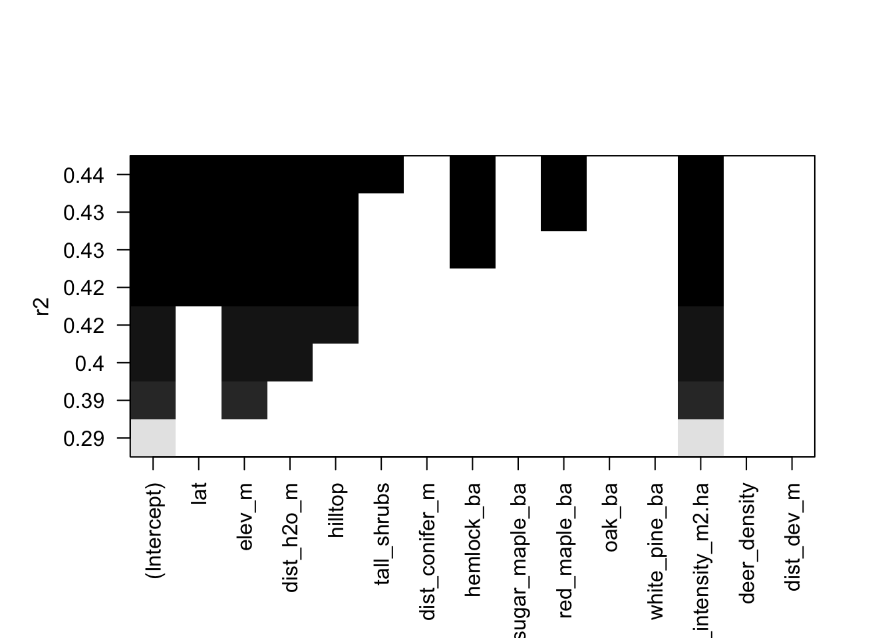
Another plot, with Mallow’s Cp
#plotting with base Rplot(all_summary$cp)
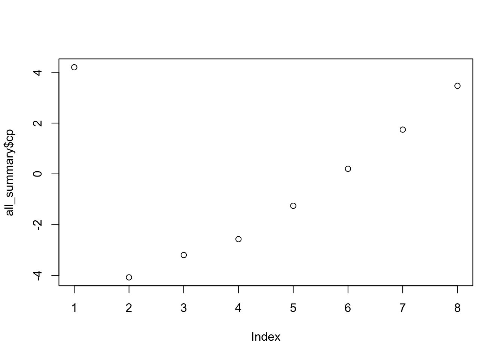
plot(all_subsets.mods, scale ="Cp")
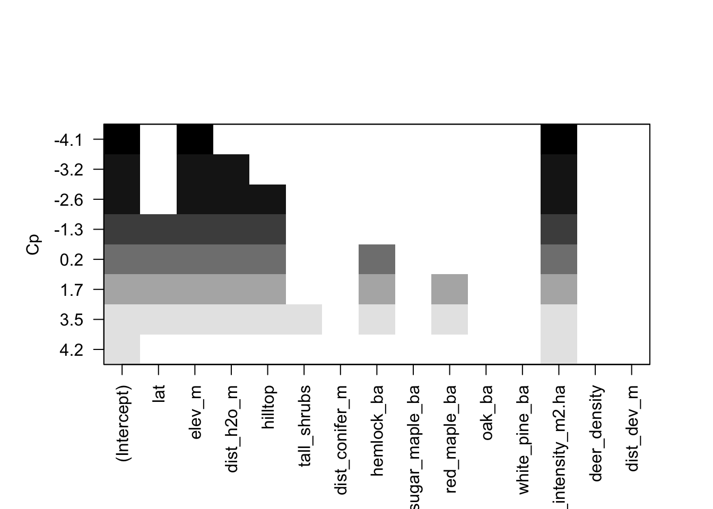
Now a plot of BIC
plot(all_summary$bic)
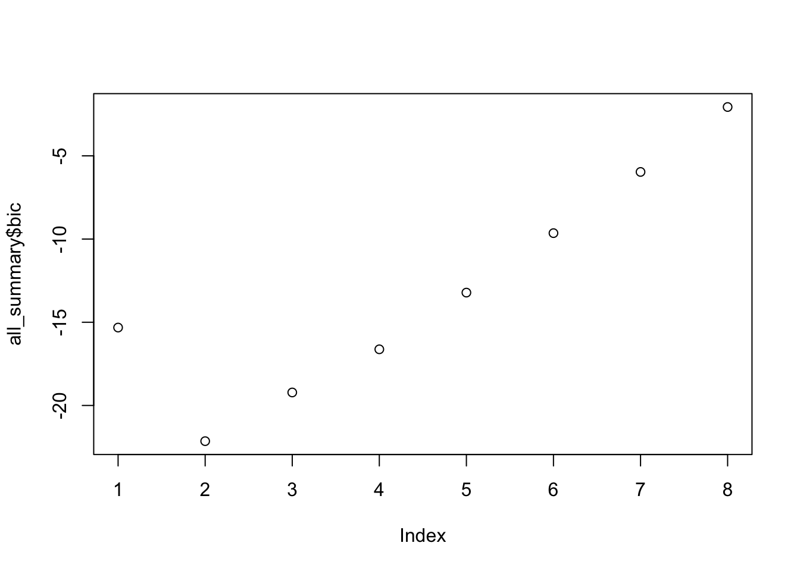
plot(all_subsets.mods, scale ="bic")
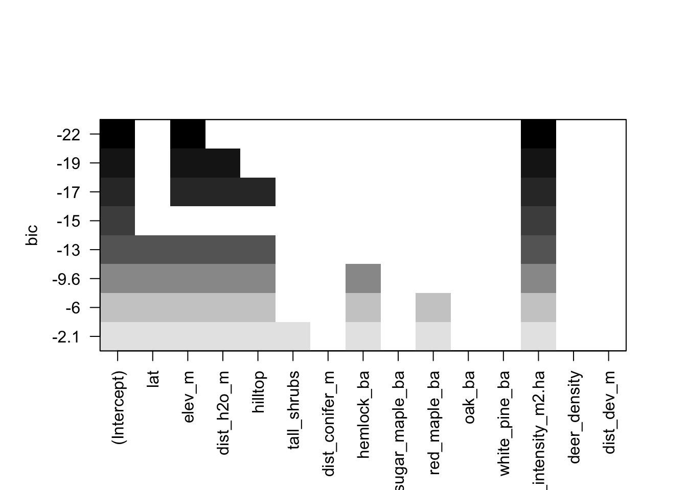
From these plots, it seems that the best model is the one with 2 predictors in it. The predictors in a 2 predictor model are elevation (elev_m) and harvest intensity (harvest_intensity_m2.ha).
Stepwise Regression
Start by defining the intercept-only model:
m.intercept_only <-glm(preds$browse_index ~1, data = preds)
Next define the model with all predictors
m.all.preds <-glm(preds$browse_index ~ ., data = preds)
Now perform the stepwise regression to move through.
m.stepwise <-step(m.intercept_only, direction ="both", scope =formula(m.all.preds))
This method also returned harvest intensity and elevation as the best predictors.
Because they are all the same model, don’t need to compare them.
Create the model:
final_mod <-lm(browse_index ~ harvest_intensity_m2.ha + elev_m, data = preds)
Check how final model fits assumptions
check_model(final_mod)
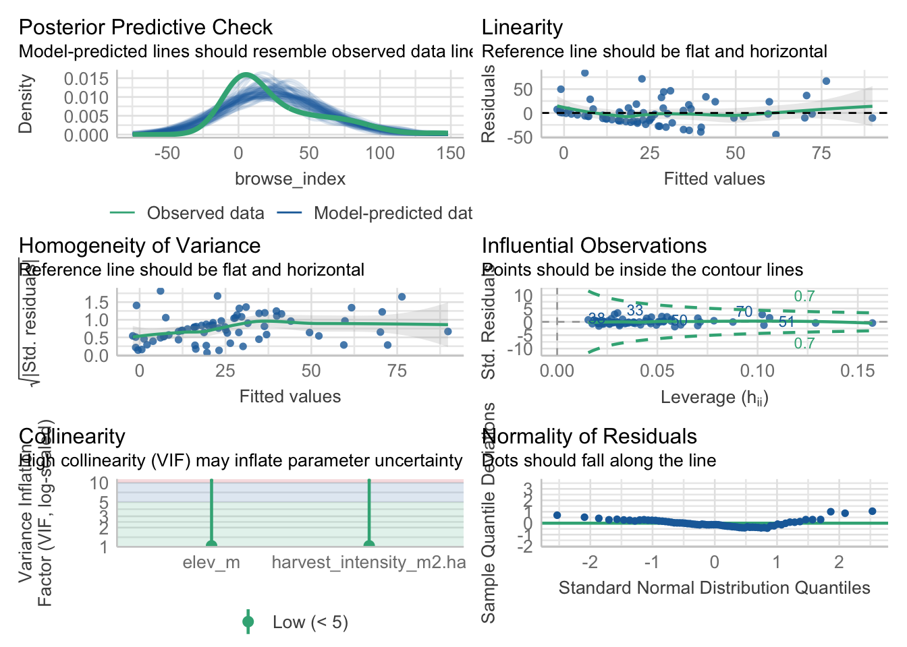
The model seems to fit most of the assumptions. There is a dip in the Homogeneity of Variance assumption, and the Posterior Predictive Check doesn’t quite line up perfectly. The rest seem good.
Run the model
The best model, according to all the tests run above, is the model with 2 predictors (harvest intensity and elevation).
Create the final model:
final_mod <-lm(browse_index ~ harvest_intensity_m2.ha + elev_m, data = preds)summary(final_mod)
Call:
lm(formula = browse_index ~ harvest_intensity_m2.ha + elev_m,
data = preds)
Residuals:
Min 1Q Median 3Q Max
-45.287 -15.906 -3.365 8.041 84.114
Coefficients:
Estimate Std. Error t value Pr(>|t|)
(Intercept) -37.19639 15.75950 -2.360 0.02118 *
harvest_intensity_m2.ha 0.30547 0.06221 4.910 6.14e-06 ***
elev_m 0.21853 0.06448 3.389 0.00118 **
---
Signif. codes: 0 '***' 0.001 '**' 0.01 '*' 0.05 '.' 0.1 ' ' 1
Residual standard error: 25.87 on 67 degrees of freedom
Multiple R-squared: 0.3925, Adjusted R-squared: 0.3744
F-statistic: 21.65 on 2 and 67 DF, p-value: 5.602e-08
anova(final_mod)
Analysis of Variance Table
Response: browse_index
Df Sum Sq Mean Sq F value Pr(>F)
harvest_intensity_m2.ha 1 21293 21292.9 31.807 3.708e-07 ***
elev_m 1 7688 7688.4 11.485 0.001179 **
Residuals 67 44853 669.4
---
Signif. codes: 0 '***' 0.001 '**' 0.01 '*' 0.05 '.' 0.1 ' ' 1
Interpretation
From the summary, I see that the model is significant (F=21.65 with 2 and 67 df, p=5.602e-08).
Both harvest intensity and elevation are significant at levels between 0.001 and 0, and between 0.01 and 0.001 respectively.
Replot and Interpretation
First, tidy up regression results and put into data frames to more easily work with them. This uses the broom package.
This plot shows the confidence intervals for harvest intensity and elevation are slightly above 0 and don’t overlap with 0, making them significant (F=21.65 with 2 and 67 df, p=5.602e-08). This means that when either harvest intensity or elevation increase, there is a very slight but significant increase in browse index.
These results were part of what I expected, considering moose biology. Moose browse index increasing where there’s a higher harvest intensity makes sense because moose prefer fresh growth to eat, which is more abundant in recently harvested areas (Massachusetts Division of Fisheries & Wildlife, n.d.). It is important to keep in mind that too much harvest would counteract the benefits that a moderate amount of harvest has, as there wouldn’t be enough cover or other resources for moose (Johnson et al, 2024). Moose are adapted to colder temperatures, so seeking out higher elevations that likely have cooler temperatures makes sense (USDA Forest Service, n.d.). I was surprised that wetland and water distance did not have an impact, as moose eat wetland plants and spend time in water to cool down (USDA Forest Service, n.d.). However, there was very few non-zero data points for those variables, so perhaps with more sampling in those areas there could be different results.
Citations
Johnson, C. J., & Rea, R. V. (2024). Response of moose to forest harvest and management: A literature review. Canadian Journal of Forest Research, 54(4), 366–388. https://doi.org/10.1139/cjfr-2023-0158
Tree <-read.csv(here("Data", "FinalUpdated_Moose_Tree_Data.csv"))
Fix data types
Tree$species <-as.factor(Tree$species)
Just want complete cases for the regression
Tree <- Tree[complete.cases(Tree), ]
Went from 3913 rows to 3397 rows.
Variables
Response:
Interaction (was the tree browsed, stripped, and/or broken by a moose) — Binary coded as 0(no) and 1(yes)
Predictor:
dbh_cm (the tree diameter at breast height) — Ratio
Hypotheses
Question: Does dbh_cm have an impact on moose interaction?
Null Hypothesis: dbh_cm is not a significant predictor of Interaction by moose.
Alternative Hypothesis: dbh_cm is a significant predictor of interaction by moose.
Biological Justification: According to the Massachusetts Division of Fisheries & Wildlife, moose prefer new growth for food, so a smaller dbh might be a predictor of Interaction.
Plots
Make a new column with interaction coded as yes and no to make the plots look better.
ggplot(Tree, aes(InteractionYN))+geom_histogram(stat="count")+#Allow for the x axis to be categorical, not continuoustheme_bw()+#remove gray backgroundxlab("Interaction") #change x axis title
Warning in geom_histogram(stat = "count"): Ignoring unknown parameters:
`binwidth`, `bins`, and `pad`
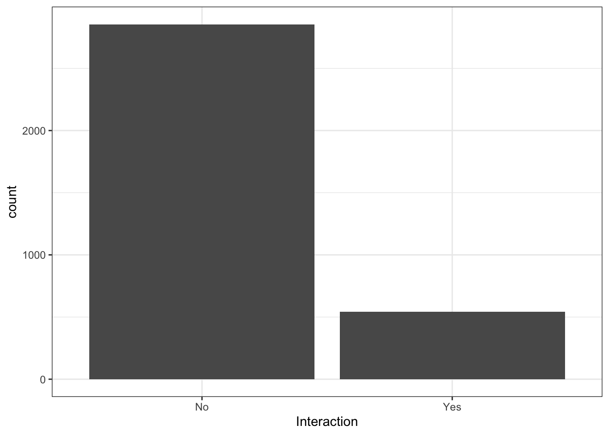
This shows that there were much more trees that were not interacted with, than those that were interacted with.
Interaction and DBH:
ggplot(Tree, aes(x = dbh_cm, y = InteractionYN))+geom_point()+theme_bw()+xlab("DBH (cm)")+#change x axis titleylab("Interaction") #change y axis title
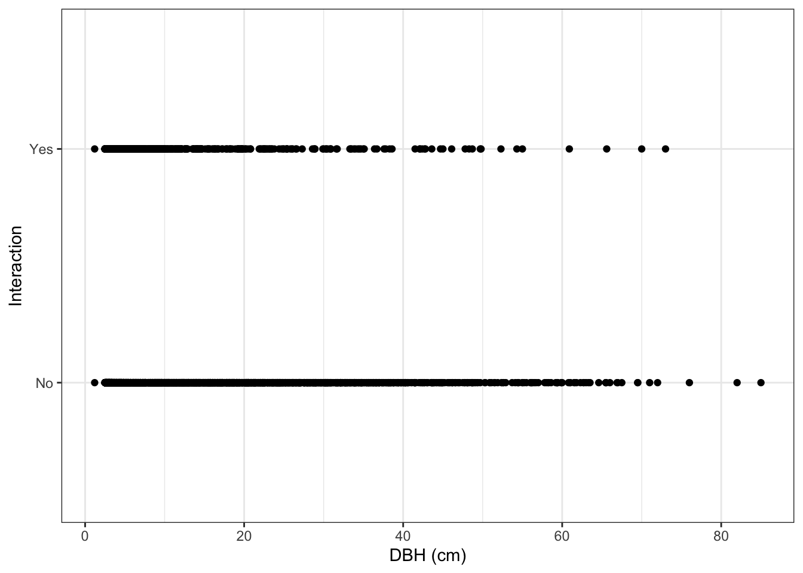
This seems to show that there are more interactions at a smaller DBH, as the yes interaction points are more dense on the left. My guess is that dbh_cm will be a significant predictor or moose interaction.
Fit and run the model
Use generalized linear model in order to tell R that responses are binary.
dbh.mod <-glm(Interaction ~ dbh_cm, family ="binomial", data = Tree) #Fit the model with dbh as a function of interaction using the binomial family and the tree data set. summary(dbh.mod)
Call:
glm(formula = Interaction ~ dbh_cm, family = "binomial", data = Tree)
Coefficients:
Estimate Std. Error z value Pr(>|z|)
(Intercept) -1.218736 0.072767 -16.749 < 2e-16 ***
dbh_cm -0.032484 0.004594 -7.071 1.54e-12 ***
---
Signif. codes: 0 '***' 0.001 '**' 0.01 '*' 0.05 '.' 0.1 ' ' 1
(Dispersion parameter for binomial family taken to be 1)
Null deviance: 2985.4 on 3396 degrees of freedom
Residual deviance: 2926.0 on 3395 degrees of freedom
AIC: 2930
Number of Fisher Scoring iterations: 5
The coefficients in this output indicate the average change in the odds of interaction occuring with each increase in dbh by 1 unit. This shows that with a 1 unit increase in dbh, the log odds of moose interaction decreases by 0.032484.
Now calculate the odds ratio to see what that means.
This shows that the oddsratio for dbh_cm = 0.968. This means that for every 1 unit of increase in dbh, the odds that a moose will interact with that tree is 0.968, or 0.968 times less likely.
Replot and Interpretation
Plot the results of the odds ratio
ggplot(Tree, aes(dbh_cm, Interaction))+geom_point()+stat_smooth(method ="glm", method.args =list(family ="binomial"), se = F)
`geom_smooth()` using formula = 'y ~ x'
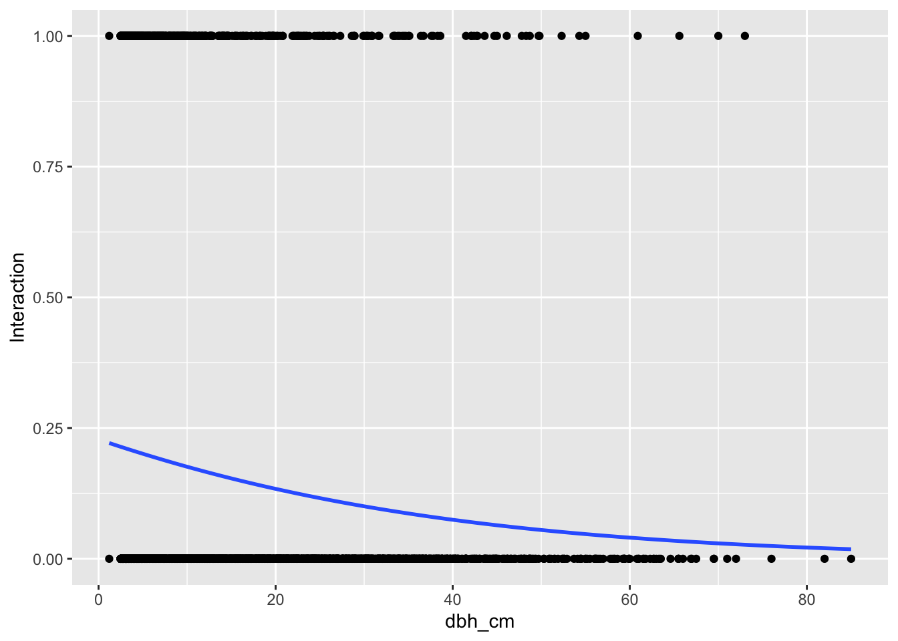
Now make a plot based on probabilities using the visreg package:
visreg(dbh.mod, "dbh_cm", gg = T, #use ggplot vs. base Rscale ="response")+labs(x ="Tree DBH (cm)",y ="Prob. of moose interaction")+#Change the axes titlestheme_bw()
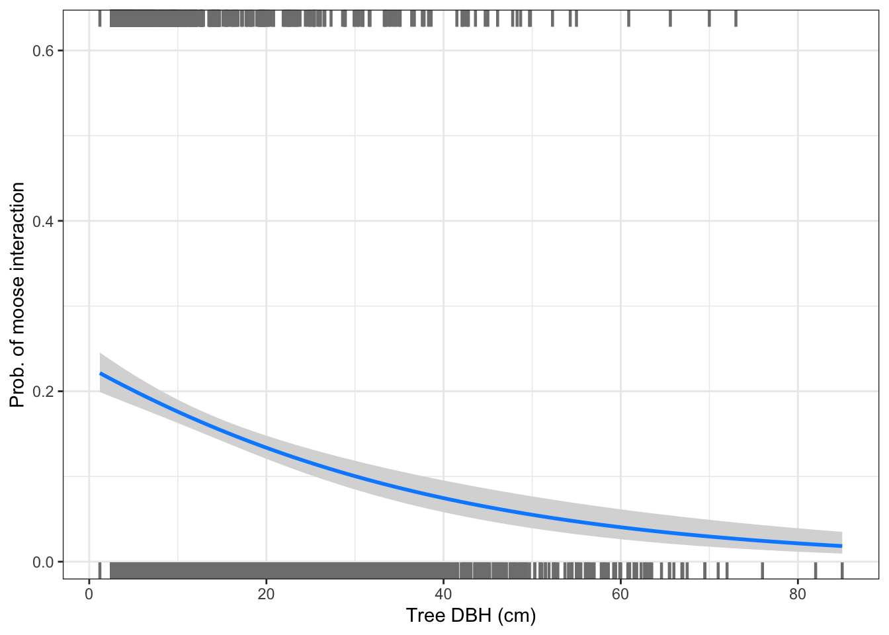
These results show that as tree DHB increases by 1, the probability of moose interaction with that tree decreases by 0.968. This is not a large decrease, but is significant (z = -7.071, p = 1.54e-12) based on the generalized linear model run. This result supports my alternative hypothesis, and is supported biologically. Moose prefer new growth trees (Massachusetts Division of Fisheries & Wildlife, n.d.), so they interact more with trees of a smaller dbh when browsing.
To complete this project, I had to learn how to run both a multiple linear regression, and a logistic regression using provided examples. The most challenging part of this process was determining the interpretation of the outputs with my own data.
I had initially planned to run a multiple logistic regression, however I encountered a challenge in doing so, and switched to running a simple logistic regression. The species predictor was too large with the many species names, and R tried to run them all separately, best that I can tell. This did not work out. However, the species names were not significant, and only dbh was, so it was an easy shift to running the simple logistic regression.
Another aspect that I had to figure out was how to best create the Interaction column out of the variables browsed, stripped, and broken. This was a multi-step process of learning different methods both online and from Erika. In the end, this was successful and worked out great!